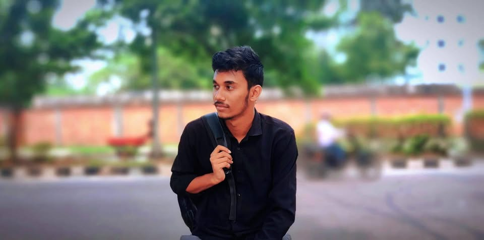

Computer Science & Engineering Student | Green University of Bangladesh

Hello! My name is Rahanul Islam Hawlader. I am currently pursuing my B.Sc. in Computer Science and Engineering at Green University of Bangladesh. I'm passionate about learning new technologies, programming, and creating meaningful digital solutions.
I believe in the power of technology to transform lives and solve complex problems. My goal is to become a skilled software developer who creates solutions that make a positive impact.
Throughout my academic journey, I've developed various technical and soft skills:
Football is more than just a game to me - it's a passion that teaches teamwork, strategy, and perseverance. I enjoy both playing and analyzing professional matches.
I was born and raised in Bogura, Bangladesh. From an early age, I developed a curiosity for computers and technology. This passion led me to study Computer Science and Engineering. My goal is to become a skilled software developer and contribute to innovative projects that improve everyday life. I enjoy tutoring and helping others understand complex concepts in an easy way, which has helped me grow both personally and academically.
After completing my degree, I plan to pursue a career in software development, focusing on creating applications that solve real-world problems. I'm particularly interested in web technologies and AI.